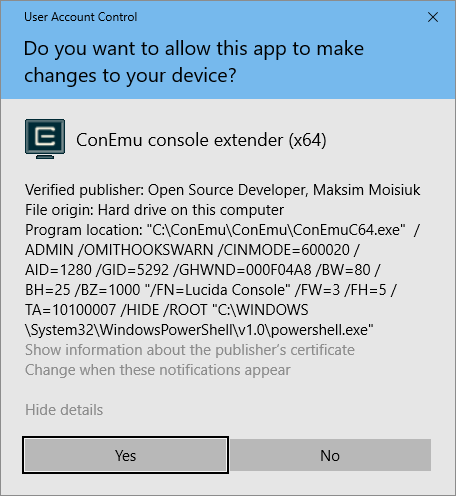

Open Source Developer, ConEmu-Maximus5
With courtesy of Certum, ConEmu's binaries now are signed as ‘Open Source Developer, ConEmu-Maximus5’.
Why to use certificate?
- You can check integrity of ConEmu executable files.
- Avoid Windows SmartScreen prevention of unrecognized program from starting (Installer).
- Vista and higher ‘User account control’ confirmation will be more friendly.

- Some antiviral programs (AVP for example) automatically place signed programs to trusted zone.